Огляди · журнал «ДентАрт» 2019 №3
Екструзії в кореневих каналах. Реакція перирадикулярних тканин та можливі ускладнення
EXTRUSIONS DURING ROOT CANAL FILLING. PERIRADICULAR TISSUE REACTIONS AND POSSIBLE COMPLICATIONS
Станіслав Геранін,стоматологічний центр «Махаон» (м. Полтава, Україна)
Пломбування кореневих каналів – важлива складова успішного ендодонтичного лікування. Герметичне апікальне запечатування запобігає апікальному підтіканню та виникненню або рецидиву апікального періодонтиту. Однак можливі помилки при механічній обробці та обтурації кореневих каналів можуть призводити до ризику екструзії матеріалів за межі апікального отвору. У статті зроблено огляд факторів ризику, ускладнень на ендодонтичному прийомі і шляхів їх усунення.
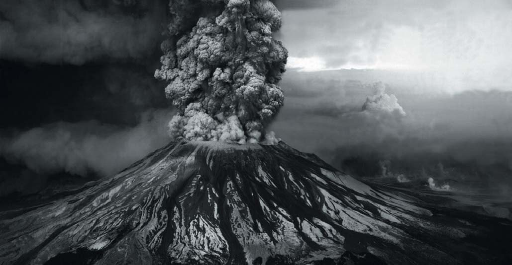
Екструзії пломбувального матеріалу і процедуральні помилки
До завдань ендодонтичного лікування належать очищення системи кореневих каналів, контроль і зниження бактеріального навантаження, а також усунення клінічної симптоматики. При обтурації пломбувальний матеріал повинен досягти апікальної частини кореня – без просування в періапікальні тканини і прилеглі структури (фото 1). На жаль, іноді надмірна механічна обробка кореневого каналу машинними і ручними інструментами веде до ризику екструзії за межі апікального отвору інфікованих ошурків, іригаційних розчинів, силера, матеріалів для тимчасового пломбування та мікроорганізмів.1 Зазвичай незначні екструзії нормально сприймаються перирадикулярними тканинами (фото 2). Однак у той же час можуть виникати певні клінічні симптоми, такі як біль, набряк, парестезії і анестезія, особливо в разі виведення пломбувального матеріалу поблизу або при безпосередньому контакті зі структурами нервових волокон.2 Багато факторів можуть підвищувати ризик екструзії силера, наприклад, надмірна інструментальна обробка, складна анатомія системи кореневих каналів, велика кількість силера, надмірне зусилля при компакції, гідростатичний тиск, використання каналонаповнювача, зуби з незавершеним формуванням верхівки і резорбцією апікальної частини кореня.3, 4
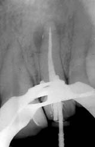
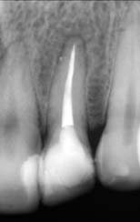
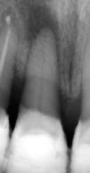
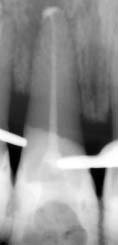
Деформація апікального отвору створює труднощі в коректній адаптації пломбувального матеріалу. За наявності апікального періодонтиту верхівкова частина кореня піддається резорбції,5-7 що погіршує якість апікального запечатування. Апікальне підтікання і потрапляння ексудату в кореневий канал створюють сприятливі умови для росту бактерій. Надлишкова інструментація призводить до потрапляння ошурків інфікованого дентину і залишків некротизованої пульпи в перирадикулярні тканини (фото 3). Бактерії, запечатані в дентинних ошурках, фізично захищені від впливу імунних захисних механізмів, що погіршує загоєння.8, 9
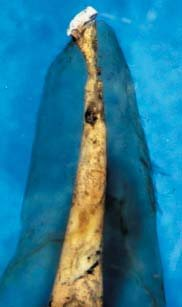
У більшості випадків екструзія силера за надмірної інструментальної обробки описується у премолярах і молярах.10
Існують 4 основних причинних фактори, що призводять до ушкодження тканин і виникнення перерахованих вище симптомів:
- механічна травма внаслідок некоректної інструментації (наприклад, перфорація нижньощелепного каналу);
- хімічний – нейротоксичний ефект матеріалів, використовуваних для очищення і пломбування кореневих каналів;
- компресійний феномен від присутності філлера або силера в нижньоальвеолярному каналі;
- перегрів тканин при недотриманні правил техніки гарячої компакції.2,11,12
Усе це може спровокувати запальний процес, що призводить до невдалого результату лікування.
Ускладнення при екструзії на верхній щелепі
На верхній щелепі силер може потрапити в синус і призводити до гаймориту, включаючи аспергілез, парестезії і неврологічні ускладнення.13 Вважається, що виведений матеріал не залишається в одній конкретній зоні пазухи і проявляє властивості чужорідного тела.14 Стаз секреції призводить до виникнення анаеробних умов, що сприяють росту спор Aspergillus (фото 4). У більшості випадків аспергілез пов’язаний з впливом пломбувальних матеріалів на основі цинк-оксид евгенолу (ЦОЕ) і параформальдегіду, які потрапили в синус. Як результат, виникає запальна реакція і блокування руху миготливого епітелію (фото 5).15-17 В одному з клінічних випадків описано симптоми: чутливість при жуванні і перкусії зуба 16 у пацієнтки 25 років протягом кількох років після ендолікування. При радіологічному дослідженні виявлено силер, виведений у верхньощелепний синус, а також наявність рентгенконтрастної маси поблизу проходу носової порожнини. Поставлено діагноз: аспергілез верхньощелепного синуса з апікальним періодонтитом зуба 16 внаслідок екструзії силера. Лікування включало апікальну хірургію з ретроградним пломбуванням щічних кореневих каналів зуба 16, антроскопію, а також видалення стороннього тіла з верхньощелепної пазухи.13
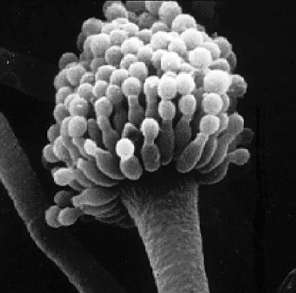
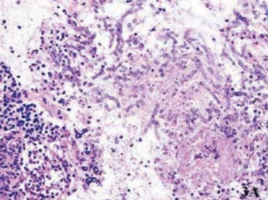
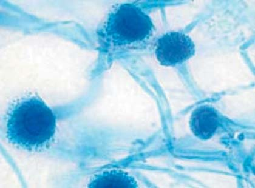
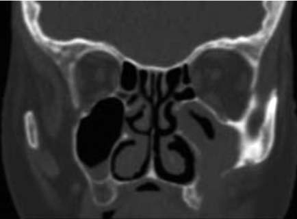
Ускладнення при екструзії на нижній щелепі
До ускладнень на нижній щелепі можна віднести біль, набряк і парестезії. Вважається, що післяопераційний біль безпосередньо пов’язаний із запальною реакцією в періапікальних тканинах і може тривати від кількох годин до більш тривалого періоду після ендолікування.18 Першим симптомом виведення пломбувального матеріалу в нижньощелепний канал є спонтанний біль у пацієнта при обтурації кореневого каналу, який не минає після закінчення дії локального анестетика.19 Сильний біль ендодонтичної природи після екструзії силера вимагає ранньої діагностики і негайних заходів для зниження ризику незворотного ушкодження нервових волокон.20 Біль може мати спонтанний, періодичний або постійний характер. Тригерами можуть стати вживання їжі, розмова, холодні або гарячі подразники. Пацієнт може також скаржитися на відчуття печіння, поколювання або тиск у зубах.21 Біль може супроводжуватися ознаками локального запалення – біль при перкусії, а також пальпації альвеолярного відростка по щічній поверхні або комбінацією ознак механічної травми і запалення нижньощелепного нерва з болем чи онімінням нижньої губи.22 Парестезія може бути наслідком некоректної інструментальної обробки – через тиск обтураційних матеріалів у мандибулярному каналі,23,24 нейротоксичні ефекти, оборотне або незворотне блокування провідності нервових імпульсів чи порушення потенціалу мембрани нервового волокна.1, 25 У деяких пацієнтів розвивається персистентна анестезія.26, 27
Гостра запальна реакція у періапікальних тканинах розвивається як результат екструзії вмісту кореневого каналу, хімічної чи мікробної природи. Механічні або хімічні ушкодження зазвичай пов’язані з надмірною інструментальною обробкою, апікальною екструзією іригантів або силерів.8
![Клінічний випадок екструзії силера в нижньощелепний канал при ендодонтичному лікуванні зуба 37 (Gonzalez-Martin і співавт., 2010): а) контрольний знімок після лікування. Визначається наявність силера, виведеного в нижньощелепний канал; б) панорамна радіограма на наступний день після потрапляння пасти в періапікальні тканини зуба 37 та нижньоальвеолярний канал; в) зона анестезії ментального нерва, позначена на шкірі через 3,5 року; г) панорамна радіограма через 3,5 року після лікування. Визначається наявність пасти в періапікальній зоні зуба 37 та нижньоальвеолярному каналі.](images/ext19-014.jpg)
![Клінічний випадок екструзії силера в нижньощелепний канал при ендодонтичному лікуванні зуба 37 (Gonzalez-Martin і співавт., 2010): а) контрольний знімок після лікування. Визначається наявність силера, виведеного в нижньощелепний канал; б) панорамна радіограма на наступний день після потрапляння пасти в періапікальні тканини зуба 37 та нижньоальвеолярний канал; в) зона анестезії ментального нерва, позначена на шкірі через 3,5 року; г) панорамна радіограма через 3,5 року після лікування. Визначається наявність пасти в періапікальній зоні зуба 37 та нижньоальвеолярному каналі.](images/ext19-015.jpg)
![Клінічний випадок екструзії силера в нижньощелепний канал при ендодонтичному лікуванні зуба 37 (Gonzalez-Martin і співавт., 2010): а) контрольний знімок після лікування. Визначається наявність силера, виведеного в нижньощелепний канал; б) панорамна радіограма на наступний день після потрапляння пасти в періапікальні тканини зуба 37 та нижньоальвеолярний канал; в) зона анестезії ментального нерва, позначена на шкірі через 3,5 року; г) панорамна радіограма через 3,5 року після лікування. Визначається наявність пасти в періапікальній зоні зуба 37 та нижньоальвеолярному каналі.](images/ext19-016.jpg)
![Клінічний випадок екструзії силера в нижньощелепний канал при ендодонтичному лікуванні зуба 37 (Gonzalez-Martin і співавт., 2010): а) контрольний знімок після лікування. Визначається наявність силера, виведеного в нижньощелепний канал; б) панорамна радіограма на наступний день після потрапляння пасти в періапікальні тканини зуба 37 та нижньоальвеолярний канал; в) зона анестезії ментального нерва, позначена на шкірі через 3,5 року; г) панорамна радіограма через 3,5 року після лікування. Визначається наявність пасти в періапікальній зоні зуба 37 та нижньоальвеолярному каналі.](images/ext19-017.jpg)
Усі силери до певної міри мають нейротоксичний ефект, який є результатом впливу компонентів, що входять до їх складу.1, 28
До найтоксичніших належать силери, що містять евгенол і параформальдегід, (Ендометазон Ivory і N 2), які можуть порушувати провідність нервових волокон.29-31 Параформальдегід є нейротоксином і може викликати деструкцію аксона за рахунок своєї газоподібної природи.6 Ендометазон може призвести до необоротного інгібування проведення нервового імпульсу діафрагмального нерва у щурів.29 Інгібуючий ефект ендометазону на сідничний нерв у щурів оборотний, але більш виражений у порівнянні з Sealapex і силерами на основі гідроксиду кальцію.31
У літературі описано випадки екструзії ендометазону в нижньощелепний канал з виникненням пролонгованої анестезії та онімінням у зоні підборіддя і нижньої губи. Застосовувалося хірургічне видалення силера і декомпресія нерва. Через деякий час після хірургічного втручання пацієнти відчували значне поліпшення, аж до зникнення всіх симптомів.1,32
При екструзії силерів у зоні нижніх премолярів можуть виникнути парестезія в бічній ділянці нижньої щелепи, оніміння нижньої губи і відчуття поколювання по вестибулярній поверхні ясен.33 Призначається протизапальна терапія протягом 3-4 тижнів з динамічним спостереженням. Описано зникнення симптоматики через 6 місяців.34 В описаному випадку виникнення болю і постійної анестезії після ендолікування та екструзії із застосуванням ЦОЕ силера Pulp canal sealer симптоматика зникла лише після хірургічного лікування.35
Потрапляння силера AH 26 у нижньощелепний канал пов’язане з появою болю і парестезії. Призначення антибіотиків та нестероїдних протизапальних засобів не поліпшує стан (фото 6).36 Хірургічне видалення силера з декомпресією нервового волокна дає позитивний результат через 5-6 місяців.35
Свіжозамішаний AH 26 має подразнюючий вплив середнього ступеня через вивільнення невеликої кількості формальдегіду та амінів у процесі застигання. У AH Plus цей показник значно нижчий.37 Однак AH Plus також може викликати цитотоксичні реакції38 при екструзії у нижньощелепний канал22 за рахунок компонента bisphenol A.39 Ці компоненти відповідальні за виражену первинну реакцію і післяопераційні болі при екструзії силера.3,40 Хімічні медіатори запалення викликають больову реакцію при прямому впливі на чутливі нервові волокна. Частинки силера фагоцитуються макрофагами і переміщуються по периметру запальної реакції. У результаті з часом макрофаги можуть повністю усунути силер з періапікальної зони – з подальшим загоєнням і повним зникненням подразнення і больових відчуттів.41
На відміну від цитотоксичних силерів, що застосовувалися в минулому, більшість сучасних пломбувальних матеріалів виявляють цитотоксичність тільки до застигання.42-44 Таким чином, навіть якщо силер у кореневому каналі, виникає запальна реакція різної інтенсивності в зоні контакту силера з вітальними апікальними і перирадикулярними тканинами. При екструзії гістологічні дослідження засвідчили, що запальна реакція більш виражена в найближчі терміни.6 Однак згодом більшість силерів втрачають свою подразнюючу дію і стають відносно інертними.45,46 При тривалих термінах за відсутності інфекції відбувається проліферація сполучної тканини з вмістом одиничних запальних і багатоядерних клітин навколо виведеного силера.6
Біосумісність пломбувального матеріалу дуже важлива для стимуляції реорганізації ушкоджених періапікальних тканин при безпосередньому контакті з матеріалом.47 У зубах з апікальним періодонтитом силери, що мають антибактеріальні властивості і не подразнюють апікальні і перирадикулярні тканини, можуть також стимулювати відкладення мінералізованої тканини в зоні апікального отвору, сприяючи загоєнню.48 Засвідчена гарна реакція періапікальних тканин на AH Plus, а також відкладення мінералізованої тканини на стінках кореневого каналу і мінералізація м’яких тканин в апікальній зоні (фото 7).49 Крім цього, гістологічно виявлено, що виведений AH 26, який первинно призводить до індукції хронічної запальної періапікальної реакції, через 6 місяців фагоцитується макрофагами і переміщується по периметру запальної реакції, а період резорбції залежить від кількості виведеного матеріалу та індивідуальних відмінностей імунної реакції в зоні періодонту (фото 8).41,50
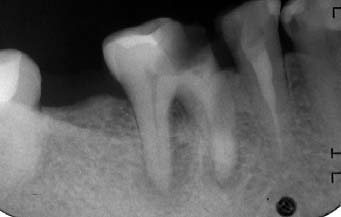
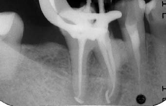
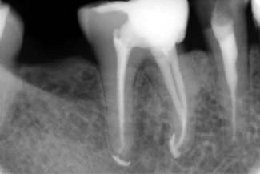
![Симптоматичний періодонтит зубів 41, 31: а) на діагностичному інтраоральному знімку – велике вогнище деструкції, ознаки внутрішньої резорбції в зубі 31; б) стан після пломбування кореневих каналів: зуб 41 – обтурація на носії, зуб 31 – техніка безперервної хвилі; в) процес загоєння вогнищ деструкції – стан через 8 місяців. Переміщення виведеного матеріалу при ремоделюванні кісткової тканини; г) стан через 4,5 року. Відсутність клінічної та суб’єктивної симптоматики. Залишки матеріалу візуалізуються у кістковій тканині.](images/ext19-021.jpg)
![Симптоматичний періодонтит зубів 41, 31: а) на діагностичному інтраоральному знімку – велике вогнище деструкції, ознаки внутрішньої резорбції в зубі 31; б) стан після пломбування кореневих каналів: зуб 41 – обтурація на носії, зуб 31 – техніка безперервної хвилі; в) процес загоєння вогнищ деструкції – стан через 8 місяців. Переміщення виведеного матеріалу при ремоделюванні кісткової тканини; г) стан через 4,5 року. Відсутність клінічної та суб’єктивної симптоматики. Залишки матеріалу візуалізуються у кістковій тканині.](images/ext19-022.jpg)
![Симптоматичний періодонтит зубів 41, 31: а) на діагностичному інтраоральному знімку – велике вогнище деструкції, ознаки внутрішньої резорбції в зубі 31; б) стан після пломбування кореневих каналів: зуб 41 – обтурація на носії, зуб 31 – техніка безперервної хвилі; в) процес загоєння вогнищ деструкції – стан через 8 місяців. Переміщення виведеного матеріалу при ремоделюванні кісткової тканини; г) стан через 4,5 року. Відсутність клінічної та суб’єктивної симптоматики. Залишки матеріалу візуалізуються у кістковій тканині.](images/ext19-023.jpg)
![Симптоматичний періодонтит зубів 41, 31: а) на діагностичному інтраоральному знімку – велике вогнище деструкції, ознаки внутрішньої резорбції в зубі 31; б) стан після пломбування кореневих каналів: зуб 41 – обтурація на носії, зуб 31 – техніка безперервної хвилі; в) процес загоєння вогнищ деструкції – стан через 8 місяців. Переміщення виведеного матеріалу при ремоделюванні кісткової тканини; г) стан через 4,5 року. Відсутність клінічної та суб’єктивної симптоматики. Залишки матеріалу візуалізуються у кістковій тканині.](images/ext19-024.jpg)
Таким чином, основна причина ендодонтичних невдач – не потенційне виведення силера, а загострення, викликане гострим запаленням та апікальною екструзією інфікованих ошурків у періапікальні тканини в процесі хемо-механічної обробки каналу. Частота таких загострень варіює від 1.4% до 16%, а їх інтенсивність залежить від кількості та вірулентності виведених мікроорганізмів.51 Проштовхування мікроорганізмів і продуктів їх життєдіяльності у перирадикулярні тканини може спровокувати біль і набряк, а також запальну реакцію протягом кількох годин або днів після ендодонтичного лікування.52 Присутність певних видів бактерій, наприклад Porphyromonas, Prevotella і Finegoldia, може визначати характер перебігу перирадикулярних процесів.53 Peptostreptococcus, Eubacterium, Porphyromonas endodontalis, P. gingivalis і Prevotella пов’язують з болями при перкусії.54
Ще одна причина невдалого ендолікування – реакція чужорідного тіла. Пломбувальний матеріал, виведений у періапікальну зону, викликає реакцію чужорідного тіла у сполучній тканині.55 Першопричиною ендодонтичних невдач є присутність мікробного фактора, однак реакція чужорідного тіла може посилювати чи підтримувати симптоматику.56 Механізм цієї реакції схожий з фагоцитозом. Дрібні частинки і ексудат викликають локальну реакцію тканин, яка характеризується присутністю макрофагів і багатоядерних гігантських клітин, а великі скупчення силера інкапсулюються.28 Однак за незначної екструзії сучасні силери не виявляють токсичності, а також не провокують реакцію чужорідного тіла.57,58
При виникненні симптоматики (больові відчуття) після екструзії силера перше рішення – це динамічне спостереження, з призначенням протизапальних препаратів.34,36,59,60 Використання біосумісних препаратів не вимагає негайного хірургічного втручання, оскільки з часом вони піддаються резорбції.33 Хірургічне видалення пломбувального матеріалу з анатомічних структур одночасно з апікальною хірургією є найбільш рекомендованим підходом за наявності тривалої больової реакції і набряку, а також у випадку болю і парестезії, якщо силер містить токсичні компоненти (параформальдегід) і радіологічне дослідження засвідчує збільшення періапікального вогнища.
При екструзії силера, що містить евгенол (Endomethasone) і параформальдегід, у нижньощелепний канал його слід видалити звідти якомога швидше, бо відстрочка хірургічного втручання і вилучення нерезорбованого фенолвмісного силера навіть на 4 дні може призвести до незворотної парестезії.61,62 При парестезії медикаментозна терапія включає кортикостероїди, протизапальні засоби та вітамінні комплекси. За периферійної нейропатії рекомендовані комбінації препаратів, які швидко зменшують біль і знижують парестезії: дулоксетин і прегабалін, а також преднізон і прегабалін.60 Цей протокол був використаний у клінічному випадку при екструзії силера AH Plus з виникненням гострого болю в зубі, а також онімінням нижньої губи правобіч після ендодонтичного лікування. Були призначені препарати преднізон, прегабалін і динамічне спостереження. Через 6 тижнів усі симптоми зникли.20,60
Систематичний огляд засвідчив, що в більшості випадків з порушенням чутливості після екструзії силера слід призначати хірургічне лікування або комбінацію нехірургічного і хірургічного лікування. Незважаючи на це, повне відновлення за нехірургічного втручання вище (63%) у порівнянні з хірургічним підходом (46%). У більшості описаних випадків застосовувався параформальдегідвмісний силер (39%), а також на основі епоксидних смол (29%). Частота повного відновлення значно вища в разі застосування силерів на основі епоксидних смол (62%) у порівнянні з параформальдегідвмісними матеріалами (27%).63
У випадках екструзії силера хірургічне втручання може призначатися лише за наявності клінічної симптоматики або радіологічних ознак збільшення періапікальної деструкції.
Незважаючи на те, що наявність пломбувального матеріалу в перирадикулярній зоні не призводить до невдачі ендолікування, це може значно затримати процес загоєння.64 Щодо загоєння, то розчинення силера в апікальній зоні може стати перевагою – з огляду на створення простору для проростання сполучної тканини з наступним відкладенням нових шарів цементу і звуженням апікального отвору та просвіту кореневого каналу.65 Розчинення силера, у свою чергу, при тривалих термінах є фактором для апікальної перколяції та росту бактерій.66
Залишковий силер за межами кореневого каналу не завжди видно на інтраоральних знімках. Тільки гістологічне дослідження може дати остаточну відповідь на це питання. Цинкоксидевгенольні силери швидше резорбуються у порівнянні з силерами на основі епоксидних смол. При коректному ендодонтичному лікуванні результат не залежить від виду виведеного силера. Це не означає, що екструзія є рекомендованою, оскільки при значному виведенні пломбувальний матеріал може призводити до серйозних ускладнень.32,36,67 Успішність лікування при екструзії значно вища у випадках відсутності періапікальної патології у порівнянні з випадками наявності апікального періодонтиту.
На підставі численних досліджень можна зробити висновок, що екструзія силера не є чинником, що призводить до погіршення загоєння, а резорбція виведеного матеріалу не є обов’язковою для відновлення періапікальної деструкції (фото 9, 10).68-71 Слід розрізняти процеси резорбції і загоєння.72,73 Малоймовірно, що екструзія силера може стати причиною невдачі ендодонтичного лікування, в той час як основною проблемою є інфекція (фото 11).74
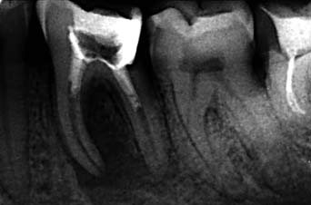
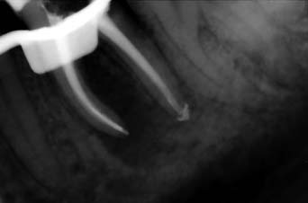
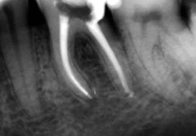
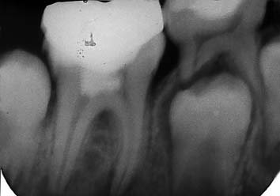
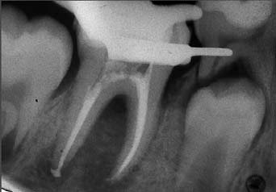
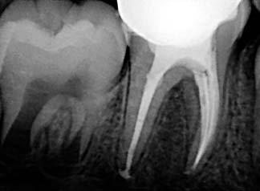
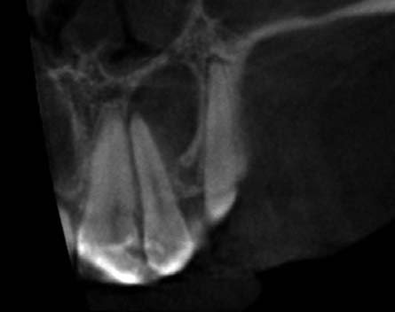
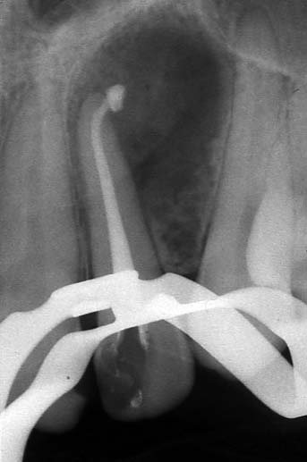
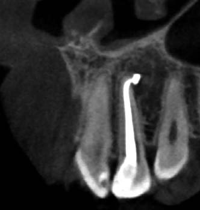
Література
- Koseoglou BG, Tanrikulu S, Subay RK, Sencer S. Anesthesia following overfilling of a root canal sealer into the mandibular canal: A case report. Oral Surg Oral Med Oral Pathol Oral Radiol Endod, 2006; 101:803-806.
- Conrad SM. Neurosensory disturbances as a result of chemical injury to the inferior alveolar nerve. J Oral Maxillofac Surg, 2001; 13:255-263.
- Tennert Ch, Jungback LI, Wrbas KT. Comparison between two thermoplastic root canal obturation techniques regarding extrusion of root canal filling- a retrospective in vivo study. Clin Oral Invest, 2013; 17:449-454.
- El Ayouti A, Weiger R, Lost C. Frequency of overintrumentation with an acceptable radiographic working length. J Endod, 2001; 27:49-52.
- Wei LX, Pei Min FH, Syed Zaharuddin SZ, Wei Ling EK, Suresh KV, Abd Muttalib KB, et al. Radiographic assessment of apical root resorption in inflammatory periapical pathologies. J Indian Acad Oral Med Radiol, 2018;30:132-6.
- Ricucci D, Siqueira JF Jr. Endodontology. An Integrated Biological and Clinical View. London: Quintessence Publishing; 2013:239–91.
- Vier FV, Figueiredo JA. Prevalence of different periapical lesions associated with human teeth and their correlation with the presence and extension of apical external root resorption. Int Endod J, 2002;35:710–9.
- Yusuf H. The significance of the presence of foreign material periapically as a cause of failure of root treatment. Oral Surg Oral Med Oral Pathol, 1982;54:566–74.
- Ricucci D, Siqueira JF Jr, Lopes WS, et al. Extraradicular infection as the cause of persistent symptoms: a case series. J Endod, 2015;41:265–73.
- Knowles KI, Jergenson MA, Howard JH. Paresthesia associated with endodontic treatment of mandibular premolars. J Endod, 2003; 29:768-770
- Tilotta-Yasukawa F, Millot S, Haddioui AE, Bravetti P, Gaudy JF. Labiomandibular paraesthesia caused by endodontic treatment: an anatomic and clinical study. Oral Surg Oral Med Oral Pathol Oral Radiol Endod, 2006; 102:47-59.
- Pogrel MA. Damage to the inferior alveolar nerve as the result of root canal therapy. JADA, 2007; 138:65-69.
- Khongkhunthian P, Reichart PA. Aspergillosis of the maxillary sinus as a complication of overfilling root canal material into the sinus: Report of two cases. J Endod, 2001; 27:476-478.
- Beck-Mannagetta J, Necek D. Radiologic findings in aspergillosis of the maxillary sinus. Oral Surg Oral Med Oral Pathol Oral Radio Endod, 1986; 62:345-349.
- Mensi M, Salgarello S, Pinsi G, Piccioni M. Mycetoma of the maxillary sinus: Endodontic and microbiological correlations. Oral Surg Oral Med Oral Pathol Oral Radiol Endod, 2004; 98:119-123.
- Odell E, Pertl C. Zinc as a growth factor of Aspergillus sp. and the antifungal effects of root canal sealants. Oral Surg Oral Med Oral Pathol Oral Radiol Endod, 1995; 79:82-87.
- Peral-Cagigal B, Redondo-Gonzalez LM, Verrier-Hernandez A. Invasive maxillary sinus aspergillosis: A case report successfully treated with voriconazole and surgical debridement. J Clin Exp Dent, 2014;6(4):e448- 51.
- Siqueira JF Jr., Rocas IN, Favieri A, Machado AG, Gahyva SM, Oliveira JCM, Abad EC. Incidence of postoperative pain after intracanal procedures based on an antimicrobial strategy. J Endod, 2002; 28:457-460.
- Siqueira JF Jr, Rocas IN, Ricucci D, Hulsmann M. Causes and management of post-treatment apical periodontitis. Br Dent J, 2014;216:305–12.
- Alonso-Ezpeleta O, Martin PJ, Lopez-Lopez J, Castellanos-Cosano L, Martin-Gonzalez J, Segura-Egea JJ. Pregabalin in the treatment of inferior alveolar nerve paraesthesia following overfilling of endodontic sealer. J Clin Exp Dent, 2014; 6:197-202.
- Spielman A, Gutman D, Laufer D. Anesthesia following endodontic overfilling with AH26. Oral Surg Oral Med Oral Pathol, 1981; 52:554-556.
- Tamse A, Kaffe I, Littner MM. Paraesthesia following overextension of AH26: report of two cases and review of the literature. J Endod, 1982; 8:88-90.
- Ahonen M, Tjaderhane L. Endodontic- related paresthesia: a case report and literature review. J Endod, 2011; 37:1460- 1464.
- Givol N, Rosen E, Bjorndal L, Taschieri S, Ofec R, Tsesis I. Medicolegal aspects of altered sensation following endodontic treatment: a retrospective case series. Oral Surg Oral Med Oral Pathol Oral Radiol Endod, 2011; 112:126- 131.
- Ahlgren FK, Johannessen AC, Hellem S. Displaced calcium hydroxide paste causing inferior alveolar nerve paraesthesia: report of a case. Oral Surg Oral Med Oral Pathol Radiol Endod, 2003; 96;734-737.
- Gallas-Torreira MM, Reboiras-Lopez MD, Garcia-Garcia A, Gandara-Rey J. Mandibular nerve paresthesia caused by endodontic treatment. Med Oral, 2003;8:299–303.
- Grotz KA, Al-Nawas B, deAguiar EG, Schulz A, Wagner W. Treatment of injuries to the inferior alveolar nerve after endodontic procedures. Clin Oral Invest, 1998;2:73-6.
- Ektefaie MR, David HT, Poh CF. Surgical resolution of chronic tissue irritation caused by extruded endodontic filling materials. J Can Dent Assoc, 2005; 71:487-490.
- Brodin P, Roed A, Aars H, Orstravik D. Neurotoxic effects of root filling materials on rat phrenic nerve in vitro. J Dent Res, 1982; 61:1020-1023.
- Brodin P. Neurotoxic and analgesic effects of root canal cements and pulp-protecting dental materials. Endod Dent Traumatol, 1988; 4:1-11.
- Serper A, Ucer O, Onur R, Etikan I. Comparative neurototxic effects of root canal materials on rat sciatic nerve. J Endod, 1998; 24:592-594.
- Brkic A, Gurkan-Koseoglu B, Olgac V. Surgical approach to iatrogenic complications of endodontic therapy: A report of 2 cases. Oral Surg Oral Med Oral Pathol Oral Radiol Endod, 2009; 107:50-53.
- Gambarini G., Plotino G., Grande N.M., Testarelli L., Prencipe M., Messineo D., Fratini L. & D’Ambrosio F. Different diagnosis of endodontic-related inferior alveolar nerve paraesthesia with cone beam computed tomography: a case report. Int Endod J, 2011; 44:176-181.
- Froes FG, Miranda AM, Abad Eda C, Riche FN, Pires FR. Non-surgical management of paraesthesia and pain associated with endodontic sealer extrusion into mandibular canal. Aust Endod J, 2009; 35:183-186.
- Scolozzi P, Lombardi T, Jaques B. Successful inferior alveolar nerve decompression for dysesthesia following endodontic treatment: Report of 4 cases treated by mandibular sagittal osteotomy. Oral Surg Oral Med Oral Pathol Oral Radiol Endod, 2004; 97:625-631.
- Gonzalez-Martin M, Torres-Lagares D, Gutierrez-Perez JL, Segura-Egea JJ. Inferior alveolar nerve paresthesia after overfilling of endodontic sealer into the mandibular canal. J Endod, 2010 Aug;36(8):1419-21
- Leonardo MR, Bezerra da Silva LA, Filho MT, Santana da Silva R. Release of formaldehyde by four endodontic sealers. Oral Surg Oral Med Oral Pathol Oral Radiol Endod 1999;88:221–5.
- Pulgar R, Segura-Egea JJ, Fernandez MF, Serna A, Olea N. The effect of AH26 and AH Plus on MCF-7 breast cancer cells proliferation in vitro. Int Endod J 2002;35:551–6.
- Segura-Egea JJ, Jimenez-Rubio A, Pulgar R, Olea N, Guerrero JM, Calvo JR. In vitro effect of the resin component bisphenol A on macrophage adhesion to plastic surfaces. J Endod, 1999;25:341–4.
- Silva-Herzog D, Ramirez T, Mora J, Pozos AJ, Silva LA., Silva RAB, Nelson-Filho P. Preliminary study of the inflammatory response to subcutaneous implantation of three root canal sealers. Int Endod J, 2011; 44:440-446.
- Bernath M. & Szabo J. Tissue reaction initiated by different sealers. Int Endod J, 2003; 36:256-261.
- Spangberg LS, Barbosa SV, Lavigne GD. AH26 releases formaldehyde. J Endod 1993; 19:596–8.
- Barbosa SV, Araki K, Spangberg LS. Cytotoxicity of some modified root canal sealers and their leachable components. Oral Surg Oral Med Oral Pathol 1993; 75:357–61.
- Orstavik D, Mjor IA. Histopathology and X-ray microanalysis of the subcutaneous tissue response to endodontic sealers. J Endod, 1988;14:13–23.
- Langeland K. Root canal sealants and pastes. Dent Clin North Am 1974;18:309–27.
- Spangberg LSW, Haapasalo M. Rationale and efficacy of root canal medicaments and root filling materials with emphasis on treatment outcome. Endod Topics ?2002;2:35–58.
- Huang FM, Tai KW, Chou MY, Chang YC. Cytotoxicity of resin-, zinc oxide-, eugenol-, and calcium hydroxide-based root canal sealers, on human periodontal ligament cells and permanent V79 cells. Int Endod J, 2002; 35:153-158.
- Tanomaru Filho M, Leonardo MR, Silva LAB, Utrilla LS. Effect of different root canal sealers on periapical repair of teeth with chronic periradicular periodontitis. Int Endod J, 1998; 31:85-89.
- Leonardo MR, Salgado AAM, Silva LAB, Filho MT. Apical and periapical repair of dog’s teeth with periapical lesions after endodontic treatment with different root canal sealers. Pesqui Odontol Bras, 2003; 17:69-74.
- Sari S, Duruturk L. Radiographic evaluation of periapical healing of permanent teeth with periapical lesions after extrusion of AH Plus sealer. Oral Surg Oral Med Oral Pathol Oral Radiol Endod, 2007; 104:54-59.
- Imura N, Zuolo ML. Factors associated with endodontic flare-ups: a prospective study. Int Endod J, 1995; 28:261- 265.
- Siqueira J.F. Microbial causes of endodontic flare–ups. Int Endod J, 2003; 36:453-463.
- Yoshida M, Fukushima H, Yamamoto K, Ogawa K, Toda T, Sagawa H. Correlation between clinical symptoms and microorganisms isolated from root canals of teeth with periapical pathosis. J Endod, 1987; 13:24-28.
- Hashioka K, Yamasaki M, Nakane A, Horiba N, Nakamura H. The relationship between clinical symptoms and anaerobic bacteria from infected root canals. J Endod, 1992; 18:558-561.
- Muruzabal M, Erausquin J. Response of periapical tissues in the rat molar to root fillings with Diaket and AH-26. Oral Surg Med Pathol, 1966; 21:786-804.
- Nair PN. Non-microbial etiology: foreign body reaction maintaining post-treatment apical periodontitis. Endod Topics, 2003; 6:114-134.
- Nair PN, Sjogren U, Krey G, Sundqvist G. Therapy-resistant foreign body giant cell granuloma at the periapex of a root-filled human tooth. J Endod, 1990; 16:589–95.
- Ricucci D, Siqueira JF Jr, Bate AL, Pitt Ford TR. Histologic investigation of root canal- treated teeth with apical periodontitis: a retrospective study from twenty-four patients. J Endod, 2009;35:493–502.
- Poveda R, Bagan JV, Fernandez JMD, Sanchis JM. Mental nerve paresthesia associated with endodontic paste within the mandibular canal: report of a case. Oral Surg Oral Med Oral Pathol Oral Radiol Endod, 2006; 102:46-49.
- Lopez-Lopez J, Estrugo-Devesa A, Jane-Salas E, Segura- Egea JJ. Inferior alveolar nerve injury resulting from overextension of an endodontic sealer: non-surgical management using the GABA analogue pregabalin. Int Endod J, 2012; 45:98-104.
- Russell DI, Ryan WJ, Towers JF. Complications of automated root canal treatment. Brit Dent J, 1982; 153:393- 398.
- Kothari P, Cannell H. Bilateral mandibular nerve damage following root canal therapy. Br Dent J, 1996; 180:189-190.
- Rosen E, Goldberg T, Taschieri S, Del Fabbro M, Corbella S, Tsesis I. The prognosis of altered sensation after extrusion of root canal filling materials: A systematic review of the literature. J Endod, 2016; 42:873-879.
- Molven O, Halse A, Fristad I, MacDonald-Jankowski D. Periapical changes following root-canal treatment observed 20-27 years postoperatively. Int Endod J, 2002;35: 784–90.
- Ricucci D, Lin LM, Spangberg LS. Wound healing of apical tissues after root canal therapy: a long-term clinical, radiographic, and histopathologic observation study. Oral Surg Oral Med Oral Pathol Oral Radiol Endod, 2009;108:609–21.
- Vieira AR, Siqueira JF Jr, Ricucci D, Lopes WS. Dentinal tubule infection as the cause of recurrent disease and late endodontic treatment failure: a case report. J Endod, 2012;38:250–4.
- Alves FR, Coutinho MS, Goncalves LS. Endodontic-related facial paresthesia: systematic review. J Can Dent Assoc, 2014;80:e13.
- Orstavik D, Qvist V, Stoltze K. A multivariate analysis of the outcome of endodontic treatment. Eur J Oral Sci, 2004;112:224–30.
- Huumonen S, Lenander-Lumikari M, Sigurdsson A, Orstavik D. Healing of apical periodontitis after endodontic treatment: a comparison between a silicone-based and a zinc oxide-eugenolbased sealer. Int Endod J, 2003;36:296–301.
- Eriksen HM, Orstavik D, Kerekes K. Healing of apical periodontitis after endodontic treatment using three different root canal sealers. Endod Dent Traumato,l 1988;4: 114–7.
- Waltimo TM, Boiesen J, Eriksen HM, Orstavik D. Clinical performance of 3 endodontic sealers. Oral Surg Oral Med Oral Pathol Oral Radiol Endod, 2001;92:89–92.
- Sari S, Duruturk L. Radiographic evaluation of periapical healing of permanent teeth with periapical lesions after extrusion of AH Plus sealer. Oral Surg Oral Med Oral Pathol Oral Radiol Endod, 2007; 104:54-59.
- Augsberger RA, Peters DD. Radiographic evaluation of extruded obturation materials. J Endod, 1990; 16:492-497.
- Lin LM, Skribner JE, Gaengler P. Factors associated with endodontic treatment failures. J Endod, 1992; 18:625-627.
- Neaverth EJ. Disabling complications following inadvertent overextension of a root canal filling material. J Endod, 1989;15:135–9.